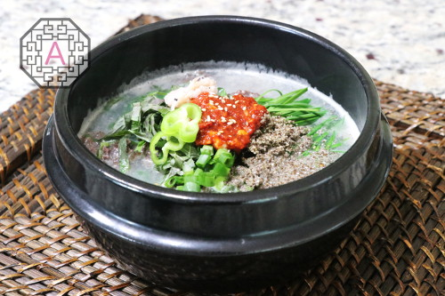

Soondaeguk

Description
Sundaeguk is regarded as an excellent hangover remedy and it is usually enjoyed with kimchi, kkakdugi, or other Korean side dishes (banchan)
The star ingredient in this hearty Korean soup is sundae – Korean blood sausage. The soup is prepared with a flavorful broth that includes sliced sundae, other types of offal, vegetables, and noodles, while rice can be added to the soup or served on the side.
Ingredients
- 1/2 lb Soondae
- 2 cups ox bone broth
- 1/4 cup garlic chives
- 1/4 cup green onions
- 1/4 cup perilla leaves
- 2 Tbsp green hot pepper
- 1 1/2 Tbsp perilla powder
- 1 tsp salted shrimp
Steps
- Before you make this soup, I recommend that you make the ox bone broth ahead of time. If you already have some in your freezer, it is a very quick and convenient way to enjoy your ox bone broth. I already posted a detailed video about how to make it, so please check it out. We need 2 cups of it for this recipe.
- Next, for the main ingredient, we need about ½ lb of Korean blood sausage, SunDae
- Reheat the sundae and cut the sundae rings into bite-sized pieces.
- Mix all the ingredients for the seasoning paste: 1 Tbsp hot pepper powder, 1 Tbsp ox bone broth, 2 tsp minced garlic, ½ lb soup soy sauce, ¼ tsp minced Ginger, and ⅛ tsp black pepper.
- In addition to the seasoning paste, we also need 1½ Tbsp of perilla powder and 1 tsp of salted shrimp for the nutty, savory, and hearty broth for this soup.
- So, all the preparation is done. It is time to cook. You can use any small pot, but I recommend a clay or stone pot for the best result. Pour 2 cups of ox bone broth into your pot. Start to cook it on high.
- Once it starts to boil in about 12 mins, add the SunDae into the broth. Here, it is important not to cook the sundae too long because it will easily break down into little pieces.
- Once it starts to boil again in a minute, quickly turn off the heat and put the veggie ingredients on top of the sundae.
- Then put the seasoning paste, salted shrimp, and perilla powder on the veggies.